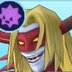
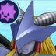
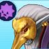

- 세대
- 완전체
- 종족
 바이러스
바이러스- 속성
 어둠
어둠- 소비 메모리
- 14
- 장비 슬롯
- 3
스테이터스 (Lv.99)
HP178045위/78
SP16232위/78
ATK20728위/78
INT20713위/78
DEF14364위/78
SPD15949위/78
막대 길이는 등록된 디지몬 중 최고값 대비 비율이에요. 순위는 스테이터스가 등록된 디지몬끼리 비교해요.
필살기 1
나이트 레이드 어둠 SP 15
디지몬 속성과 같음SS 보너스 +15%
적 전체에 어둠속성 위력 65의 마법공격을 하고 15%를 HP로 흡수한다.
SS(서포트스킬)
나이트메어 솔저스
어둠속성 스킬의 대미지가 15% 증가한다.
계승기 (레벨업 습득) 4
이 디지몬이 레벨업으로 배우는 스킬이에요. 배운 스킬은 진화·퇴화해도 계속 쓸 수 있어요.
| 습득 Lv | 스킬 | 속성 | SP |
|---|---|---|---|
| 15 | 헬 크러셔 I 적 전체에 어둠속성 위력 20의 마법공격. 명중률 95%. | 4 | |
| 25 | 스피릿 드레인 적 1체에 무속성 위력 40의 마법공격을 하고 10%를 SP로 흡수한다. | 3 | |
| 35 | 나이트메어 III 적 1체에 어둠속성 위력 95의 마법공격. 명중률 95%. | 9 | |
| 45 | 디스트로이 캐논 III 적 1체에 어둠속성 위력 105의 물리공격. 명중률 95%. | 9 |
이 디지몬이 강한 상대
상대 종족(세로)과 속성(가로)별로 이 디지몬의 공격 필살기 중 가장 높은 배율이에요. 칸에 마우스를 올리면 계산 근거가 보여요.
×3 이상×2 이상보통×1 미만
| 상대 ↓ / → | |||||||||
|---|---|---|---|---|---|---|---|---|---|
| 백신 | ×0.57 | ×0.57 | ×0.57 | ×0.57 | ×0.57 | ×0.57 | ×0.86 | ×0.57 | ×0.57 |
| 데이터 | ×2.30 | ×2.30 | ×2.30 | ×2.30 | ×2.30 | ×2.30 | ×3.45 | ×2.30 | ×2.30 |
| 바이러스 | ×1.15 | ×1.15 | ×1.15 | ×1.15 | ×1.15 | ×1.15 | ×1.73 | ×1.15 | ×1.15 |
| 프리 | ×1.15 | ×1.15 | ×1.15 | ×1.15 | ×1.15 | ×1.15 | ×1.73 | ×1.15 | ×1.15 |
등록된 디지몬 중 ×2 이상으로 공격할 수 있는 상대 80마리
완전체 같은 세대 23 · 다른 세대 상대는 도감에서 볼 수 있어요.
슈퍼스타몬×3.45피콜몬×3.45나이트몬×2.30데드메라몬×2.30도사몬×2.30돌그레몬×2.30디지타몬×2.30라일라몬×2.30릴리몬×2.30마하가오가몬×2.30메가시드라몬×2.30메탈콩알몬×2.30볼케몬×2.30세이버헉몬×2.30안티라몬×2.30운석몬×2.30캐치콩알몬×2.30콩알몬×2.30크레세몬×2.30트리케라몬×2.30팬더몬×2.30펌프몬×2.30히포그리포몬×2.30
진화 전 디지몬 (퇴화 가능) 5
진화 가능 디지몬 5

베놈묘티스몬
- 레벨 55 이상
- 최대 HP가 1200 필요
- 최대 SP가 110 필요
- 공격력이 110 필요
- 지력이 110 필요
- 재능이 40 필요

그랜드라크몬
- 레벨 50 이상
- 최대 HP가 1300 필요
- 공격력이 110 필요
- 지력이 110 필요
- 재능이 40 필요

발바몬
- 레벨 60 이상
- 최대 SP가 160 필요
- 방어력이 120 필요
- 지력이 200 필요
- 재능이 80 필요
피에몬
- 레벨 50 이상
- 공격력이 130 필요
- 지력이 160 필요
- 민첩이 110 필요
- 재능이 20 필요
알카디몬 궁극체
- 레벨 60 이상
- 최대 SP가 130 필요
- 공격력이 200 필요
- 민첩이 100 필요
- 재능이 40 필요
- 해커스 메모리를 클리어했다
진화 트리 · 묘티스몬까지 오는 길 + 다음 진화
왼쪽부터 진화 순서예요. 묘티스몬 오른쪽(점선 칸)은 바로 다음 진화 1단계예요. 그 뒤가 궁금하면 그 디지몬을 눌러 따라가 보세요. 선은 출발하는 디지몬의 색을 따라가요. 디지몬을 한 번 누르면 거기서 묘티스몬까지 가는 경로만 남고, 한 번 더 누르면 그 디지몬 페이지로 이동해요. 회색 칸은 아직 정보가 없는 디지몬이에요.
유년기I
유년기II
성장기
성숙기
완전체
궁극체 ▸